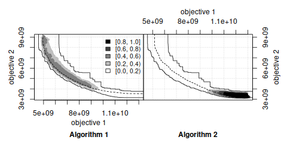
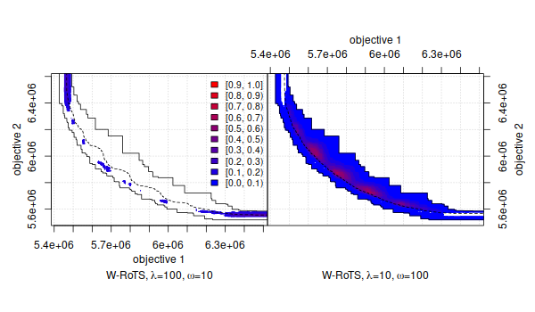

Maintainer: Manuel López-Ibáñez
Contributors: Manuel López-Ibáñez, Marco Chiarandini, Carlos M. Fonseca, Luís Paquete, Thomas Stützle, and Mickaël Binois.
Introduction
The empirical attainment function (EAF) describes the probabilistic distribution of the outcomes obtained by a stochastic algorithm in the objective space. This R package implements plots of summary attainment surfaces and differences between the first-order EAFs. These plots may be used for exploring the performance of stochastic local search algorithms for biobjective optimization problems and help in identifying certain algorithmic behaviors in a graphical way.
The corresponding book chapter [1] explains the use of these visualization tools and illustrates them with examples arising from practice.
In addition, the package provides functions for computing several quality metrics, such as hypervolume, IGD, IGD+, and epsilon.
Keywords: empirical attainment function, summary attainment surfaces, EAF differences, multi-objective optimization, bi-objective optimization, performance measures, performance assessment, graphical analysis, visualization.
Relevant literature:
-
Manuel López-Ibáñez, Luís Paquete, and Thomas Stützle. Exploratory Analysis of Stochastic Local Search Algorithms in Biobjective Optimization. In T. Bartz-Beielstein, M. Chiarandini, L. Paquete, and M. Preuss, editors, Experimental Methods for the Analysis of Optimization Algorithms, pages 209–222. Springer, Berlin, Germany, 2010.
(This chapter is also available in a slightly extended form as Technical Report TR/IRIDIA/2009-015).
[ bibtex | doi: 10.1007/978-3-642-02538-9_9 | Presentation ]
Download and installation
The software is implemented as an R package, but the code for only computing the EAF is available as a C program, and it does not require installing R or any R packages. Just download the package source code, uncompress it, and look for the directory inst/scripts/eaf. This code can be used to implement your own visualizations instead of the visualizations provided by the eaf package.
The visualization of the EAFs require installing the eaf package. Therefore, for making use of all the features, a basic knowledge of R is recommended. However, the eaf package contains two Perl scripts that allow to generate standard plots without any knowledge about R. See inst/scripts/eafplot/ and inst/scripts/eafdiff/ in the package source code. The scripts use the eaf package internally to generate the plots, and, hence, the eaf package must be installed and working.
The first step before installing the eaf package is to install R. Once R is installed in the system, there are two methods for installing the eaf package:
-
Install within R (automatic download, internet connection required). Invoke R, then
- Download the eaf package from CRAN (you may also need to download and install first the package modeltools), and invoke at the command-line:
where
<package>is one of the three versions available:.tar.gz(Unix/BSD/GNU/Linux),.tgz(MacOS X), or.zip(Windows).
Search the R documentation if you need more help to install an R package on your system.
If you wish to be notified of bugfixes and new versions, please subscribe to the low-volume emo-list, where announcements will be made.
[ Download eaf package from CRAN ] [ Documentation ] [ Development version (GitHub) ]
Usage
Once the eaf package is installed, the following R commands will give more information:
library(eaf)
?eaf
?eafplot
?eafdiffplot
?read.data.sets
example(eafplot)
example(eafdiffplot) # This one takes some timeApart from the main R package, the source code contains the following extras in the directory inst/ (after installation, these files can be found at the directory printed by the R command system.file(package="eaf")):
-
scripts/eaf: This C program computes the empirical attainment function in 2 dimensions. It is NOT required by the other programs, but it is provided as a useful command-line utility. This version is based on the original code written by Carlos M. Fonseca available at http://www.tik.ee.ethz.ch/pisa/. Another version of the code that handles three dimensions is available at Prof. Fonseca’s website. -
scripts/eafplot: Perl script to plot summary attainment surfaces. -
scripts/eafdiff: Perl script to plot the differences between the EAFs of two input sets. -
extdata/: Examples of utilization of the above programs. These are discussed in the corresponding book chapter [1].
For more information, consult the README files at each subdirectory.
Python
Thanks to rpy2, you can use the eaf package from Python. A complete example would be:
import numpy as np
from rpy2.robjects.packages import importr
from rpy2.robjects import r as R
from rpy2.interactive import process_revents
process_revents.start()
eaf = importr("eaf")
path = R('system.file(package="eaf")')[0] + "/extdata/"
alg1 = eaf.read_data_sets_(path + "ALG_1_dat")
alg1 = np.array(alg1).transpose()
eaf.eafplot(alg1[:, 0:2], sets=alg1[:,2])
alg2 = np.array(eaf.read_data_sets_(path + "ALG_2_dat")).transpose()
eaf.eafdiffplot(alg1, alg2)License
This software is Copyright (C) 2011 Carlos M. Fonseca, Luís Paquete, Thomas Stützle, Manuel López-Ibáñez and Marco Chiarandini.
This program is free software (software libre); you can redistribute it and/or modify it under the terms of the GNU General Public License as published by the Free Software Foundation; either version 2 of the License, or (at your option) any later version.
This program is distributed in the hope that it will be useful, but WITHOUT ANY WARRANTY; without even the implied warranty of MERCHANTABILITY or FITNESS FOR A PARTICULAR PURPOSE. See the GNU General Public License for more details.
IMPORTANT NOTE: Please be aware that the fact that this program is released as Free Software does not excuse you from scientific propriety, which obligates you to give appropriate credit! If you write a scientific paper describing research that made substantive use of this program, it is your obligation as a scientist to (a) mention the fashion in which this software was used in the Methods section; (b) mention the algorithm in the References section. The appropriate citation is:
- Manuel López-Ibáñez, Luís Paquete, and Thomas Stützle. Exploratory Analysis of Stochastic Local Search Algorithms in Biobjective Optimization. In T. Bartz-Beielstein, M. Chiarandini, L. Paquete, and M. Preuss, editors, Experimental Methods for the Analysis of Optimization Algorithms, pages 209–222. Springer, Berlin, Germany, 2010. doi: 10.1007/978-3-642-02538-9_9
Moreover, as a personal note, I would appreciate it if you would email manuel.lopez-ibanez@manchester.ac.uk with citations of papers referencing this work so I can mention them to my funding agent and tenure committee.